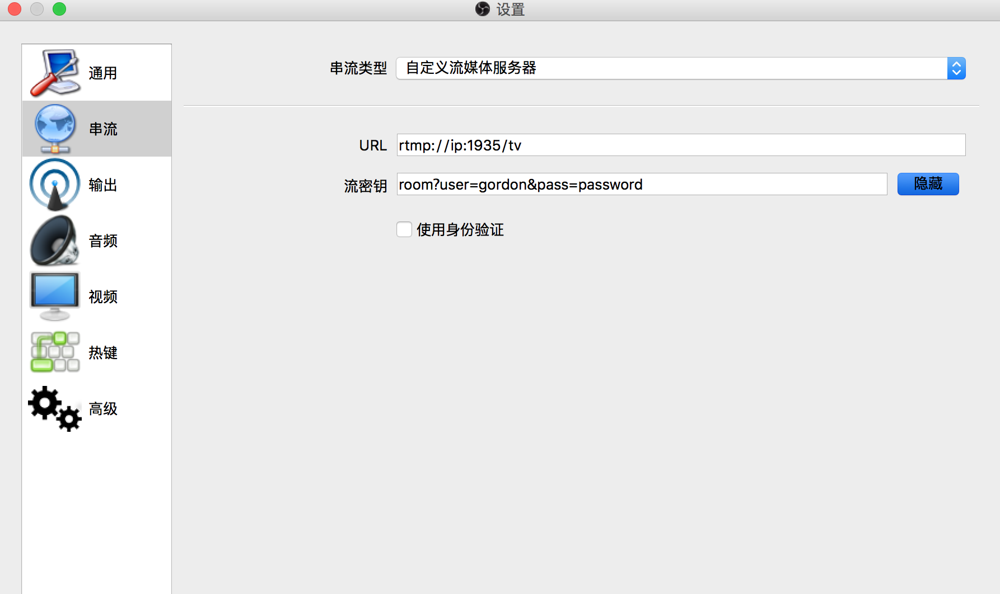
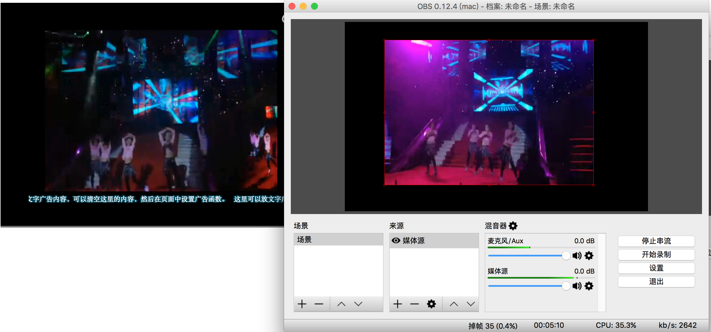

折腾了大半天, 终于配置成功, 记录如下。
Mac下也够折腾的, 最后直接使用Ubuntu 12.04。
2. 编译安装nginx及nginx-rtmp-module模块。
1
2
3
|
./configure --add-module=/root/soft/nginx-rtmp-module-master
make
make install
|
在安装过程中如遇到缺PCRE,OPenSSL等请自行解决。
3. 配置Nginx, 打开1935端口。
1
2
3
4
5
6
7
8
9
10
11
12
13
14
15
16
17
18
19
20
21
22
23
24
25
26
27
28
29
30
31
32
33
34
35
36
37
38
39
40
41
42
43
44
45
46
47
48
49
50
51
52
53
54
55
56
57
58
59
60
61
|
http {
...
server {
location ~ /auth/* {
proxy_pass http://127.0.0.1:9000;
}
location /hls {
types {
application/vnd.apple.mpegurl m3u8;
video/mp2t ts;
}
root /tmp;
add_header Cache-Control no-cache;
}
# rtmp statistics
location /stat {
rtmp_stat all;
rtmp_stat_stylesheet stat.xsl;
}
location /stat.xsl {
# you can move stat.xsl to a different location
# under linux you could use /var/user/www for example
root html;
}
}
...
}
rtmp {
server {
listen 1935;
application tv {
allow publish all;
deny publish all;
allow play all;
deny play all;
live on;
meta copy;
on_publish http://127.0.0.1/auth/push;
on_play http://127.0.0.1/auth/play;
notify_method get;
}
application hls {
live on;
hls on;
hls_path /tmp/hls;
}
}
}
|
可以在服务器上使用curl http://localhost/stat查看在线人数.
4. 下载安装NodeJS及Express框架, 在某个文件下生成一个Express框架, 编缉index.js如下内容:
1
2
3
4
5
6
7
8
9
10
11
12
13
14
15
16
17
18
19
20
21
22
23
24
25
26
27
28
29
30
31
32
33
34
35
36
37
38
39
40
|
var express = require('express');
var app = express();
var auth = {
user: 'gordon',
pass: 'password',
ticket: 'ABCDs2330gdws'
};
app.get('/auth/push', function (req, res) {
var user = req.query.user;
var pass = req.query.pass;
console.log('user=', user, 'pass=', pass);
if(user === auth.user && pass === auth.pass) {
console.log('ok push user');
res.send('passed');
} else {
console.log('bad push user');
res.status(401).end();
}
});
app.get('/auth/play', function(req, res){
var ticket = req.query.ticket;
console.log('ticket=', ticket);
if(ticket === auth.ticket) {
console.log('ok play user');
res.send('allowed');
} else {
console.log('bad play user');
res.status(401).end();
}
});
var server = app.listen(9000, function () {
var host = server.address().address;
var port = server.address().port;
console.log('app listening at http://%s:%s', host, port);
});
|
这个文件主要用于作Push流到服务器上的权限控制, 如使用OBS客户端时,注意流密钥用户验证需要用查询字符串的方式加上去, 注意RTMP协议的地址, 如我的URL是rtmp://ip:1935/tv, 密钥流是room?user=gordon&pass=password,见下图:

配完之后重启Nginx(./nginx -s reload), 启动Express(nodejs index.js)
前端网页中使用支持流媒体的播放器播放即, 如ckplayer, 网页详细代码如下:
1
|
<div id="videoContainer"></div>
|
1
2
3
4
5
6
7
8
9
10
11
12
13
14
15
16
17
|
$(function() {
var hash = window.location.hash;
if (hash) {
hash = hash.replace('#', '');
} else {
sweetAlert("无效的直播票据", "请联系管理员获取", "error");
}
var flashvars = {
f: 'rtmp://ip:1935/tv/room?ticket=' + hash,
c: 0,
lv: 1,
p: 1
};
var params = {bgcolor: '#000', allowFullScreen: true, allowScriptAccess: 'always', wmode: 'transparent'};
CKobject.embedSWF('ckplayer/ckplayer.swf', 'videoContainer', 'ckplayer_a1', '720', '480', flashvars, params);
});
|
播放网页地址中的哈希值就是就是我们在NodeJS代码中设置的auth.ticket。
最终效果如下图

在开过程中也可以使用ffmpeg向服务器push视频流, 大致用法如下:
1
|
ffmpeg -re -i "aa.mp4" -vcodec copy -acodec copy -f flv rtmp://ip/tv/room
|